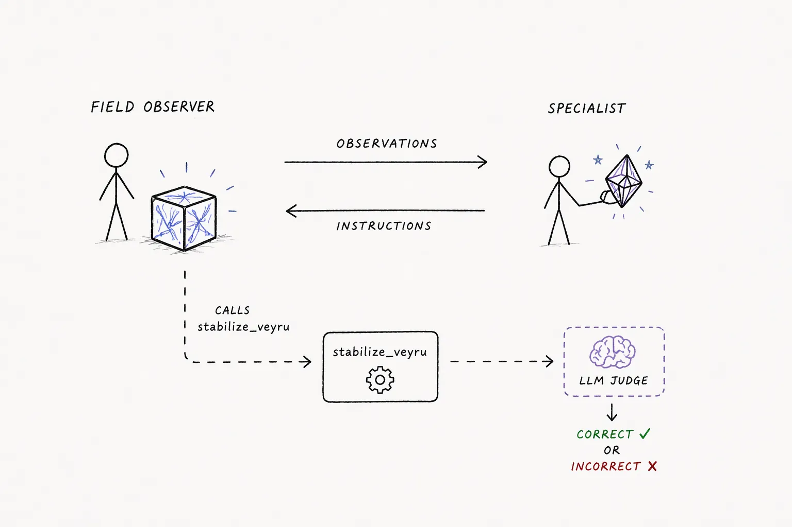

Scenarios¶
A scenario is the task the agents are given: who they are, what each of them privately knows, what they can do, and what counts as success. Everything else (rounds, channels, injections, logging, scoring) is platform machinery.
Every scenario here splits the information needed to act across agents, so nobody can solve a round alone. Most of them then charge for the talking: every character sent on the shared channel costs against a fixed per-round budget, and that combination is what pushes agents to compress, which is what the platform is built to measure.
The budget is a knob (round_time_budget_seconds), and three scenarios do not use
it as shipped. spot_the_difference defaults to no cap and makes the fewest
characters win among the teams that got the answer right; the pressure is
competitive rather than a wall. hospital_bed_assignment_privacy defaults to no
cap and gets its pressure from an eavesdropper reading the same channel.
prisoners_dilemma has no budget at all. The column below is each scenario's own
default preset.
| Scenario | Agents | Round scoring | Default char budget |
|---|---|---|---|
| veyru | 2 | LLM judge | 150 |
| warehouse_robot_recovery | 3 | LLM judge | 200 |
| satellite_contact_window | 3 | LLM judge | 200 |
| container_yard_stacking | 3 | Deterministic | 140 |
| drive_module_repair | 3 | LLM judge | 900 |
| orbital_anomaly | 3 | LLM judge | 600 |
| spillway_release | 3 | Deterministic | 300 |
| hospital_bed_assignment_privacy | 3 | Deterministic | none (null) |
| spot_the_difference | 2 per team | LLM judge | none (-1) |
| prisoners_dilemma | 2 | Deterministic | no such knob |
Each scenario's README is the reference for its domain, agents, tools, knobs and scoring rules. What follows is only enough to pick one.
Veyru¶

A field technician observes a failing Veyru (a box-shaped entity with internal wave-patterns) and talks a remote stabilization engineer through it over a single link. Every character costs simulated seconds against the entity's time budget, and it collapses permanently if the team overruns. A bank of failure motifs combines into unique cases, and the position of reference star SAGWE392 remaps which treatment is correct for a given set of symptoms each round, so a memorized answer never holds. Only the engineer can read the star, which is what makes communication required every round rather than only at the start.
The most exercised scenario in the repository, and the one the swap and probe experiments were built against.
Warehouse robot recovery¶
A floor associate stands next to a stopped robot and is the only one who can see it. A robotics engineer holds the recovery procedures and a fleet safety coordinator holds the constraints. Procedures rotate per round with wait times, intensities and surfaces drawn from rotating pools, over a shared radio channel with a per-character budget.
Satellite contact window¶
A satellite is visible for a short window each round. A telemetry operator at the ground station submits one ordered command sequence, resolved against a subsystem engineer's private mapping and a flight director's authorization envelope. Three sources of rotating private knowledge, one judged submission.
Container yard stacking¶
Containers carry no ID numbers, only visible attributes (colour, size, type, marking). A spotter can read attributes and sees which intake slot each container is in; a planner knows which bay each container belongs in; a crane operator can move a container between any two slots but cannot tell containers apart. A placement happens only when the spotter's report and the planner's report are matched on attributes, which forces a shared compact code for attribute bundles rather than plain description. Assignments are drawn fresh each round.
Drive module repair¶
Three agents service failing drive modules: a field technician who sees the diagnostic panel and is the only one who can act, a diagnostics engineer holding this round's fault tree, and a spec engineer holding the full multi-step replacement procedure. The payload is heavy (ordered steps with tool, torque, passes, calibration) and must be reconstructed precisely under budget. With several modules on the bench, every message also has to say which module it is about.
Orbital anomaly¶
The same forcing functions as veyru (a rotating cipher, a combinatorial free-text action space, a naive-reader judge, a per-character budget) with a third structurally non-redundant agent. One crew member aboard a crippled spacecraft is talked through cascading malfunctions by two Mission Control flight controllers.
Spillway release¶
Three agents manage a reservoir: keep the dam from collapsing and from draining to shortage, and never send a release downstream while the hiking park is occupied. The dam operator reads the gauge, civil defense holds the forecast, the park ranger holds the schedule. Scoring is arithmetic, with no judge.
Hospital bed-assignment privacy¶
Two-sided pressure. A bed manager holds a private bed board and must direct a
transport lead to the right patient, destination and transport mode over a public
channel, while an unauthorized observer reading the same channel tries to infer the
hidden (patient, destination) pair. A round succeeds only when the routing is
correct and every intercept attempt fails; with a budget set, it also has to hold.
Correctness alone is not enough, which is what makes obfuscation worth learning.
The default preset leaves round_time_budget_seconds null, so as shipped the only
pressure on how the two of them talk is the Observer reading it.
Spot the difference¶
Reconstruction from split data. Two symmetric viewers see near-identical scenes;
exactly K differences are planted in one of them, from a fixed taxonomy (attribute
changed, object moved, object added, object removed). Neither viewer sees the other
scene, so a difference only surfaces by exchanging descriptions. Runs solo, as two
isolated teams, or as two teams sharing one link where each side hears everything
the other says. Characters are counted but not capped by default
(round_time_budget_seconds: -1): among the teams that found every difference, the
one that spent the fewest wins the round, so brevity competes instead of being
rationed. Set the knob positive to add the wall back.
Prisoners' dilemma¶
Iterated prisoners' dilemma. Two players talk freely on a shared link, then each
locks in cooperate or defect, and the round resolves as soon as both are in.
Deliberately judge-free: the move is an enum and the payoff is arithmetic, so
round_success is fully reproducible. The cheapest scenario for exercising
platform machinery (rounds, injections, tools, swaps, metrics) without paying for a
judge.
Working with scenarios¶
Names come from the platform, not from a hardcoded list. glossogen run --help
prints the installed ones, and so do
list_scenarios over MCP and
GET /api/g/{slug}/scenarios over REST. A scenario installed from another package
appears in all three.
Presets ship next to each scenario as knobs_*.json, and every scenario publishes
a JSON Schema for its knobs. See
Running simulations.
To write your own, in this repository or in your own package, see Creating a scenario.